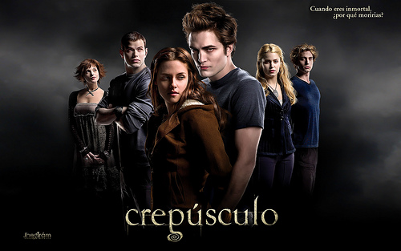
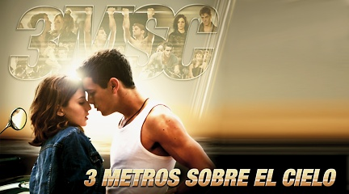

Empezar la aventura
INICIARTodo empezó como un día normal, en una escuela de diseño en 3D y programación de videojuegos, animación y entornos interactivos, donde otra tarde más pasaba lentamente mientras los pocos alumnos que no estaban enfermos de gripe miraban aburridos sus pantallas de ordenador matando el tiempo sin saber ni lo más mínimo la realidad del exterior, sin saber lo que sacudía el mundo en esos instantes. Un pequeño aire frio susurraba, molestando los primeros indicios de calor de los primeros días de primavera y de fondo se escuchaban a lo lejos sirenas de todo tipo, y los alumnos discutían sobre qué clase de vehículo eran cada una. Entre risas y bromas la directora irrumpió dentro de la clase, con un rostro de miedo, preocupación y desesperación. El silencio se apodero de todo. Pasaron unos segundos antes de que la directora abriera la boca y empezara a dar explicaciones, pero todos los alumnos sabían que algo no estaba bien y que un peligro mayor estaba a punto de apoderarse de todo. - Chicos. Acaban de anunciar por los medios que la supuesta epidemia de gripe es algo más peligros. Resulta que es un virus lanzado por Corea del Norte para aniquilar toda la humanidad. No sabemos exactamente qué es lo que hace, pero vuelve a los enfermos inmortales y son capaces de comerse a otras personas. Tenéis que volver a vuestras casas, con vuestras familias y poneros a salvo. - La directora se dio la vuelta y salió corriendo, dejando a todos sus alumnos allí, quietos, asimilando todo lo ocurrido. Cuatro chicos se reunieron y comentaron diferentes opciones para sobrevivir y salir de allí con vida. Arnold comento la idea de quedarse en la escuela y mirar video tutoriales de supervivencia, aprender y una vez preparados salir fuera y enfrentarse a los levantados. Jhonny, un estudiante de intercambio, opino que lo mejor era salir e ir en busca de armas para poder defendernos. Y por último, el tercero de los cuatro, ofreció la posibilidad de ir a su casa que se encontraba muy adentro del bosque, en una montaña y lejos de la ciudad, y una vez allí decidir. Toda la responsabilidad de la decidir cayó encima de David como una gran roca. Pensó durante unos segundos mirando el suelo en busca de la mejor opción. Levanto la cabeza, miro a sus amigos y pronuncio la respuesta…
Quedarnos en teknos (página 2) Ir en busca de armas (página 10) Ir a casa de Genius para refugiarnos (página 18)La decisión de quedarse en la escuela y mirar video tutoriales gusto a todos y rápidamente se pusieron manos a la obra. Miraron toda clase de videos, como encender fuego, como construir armas y trampas, que comer y como moverse entre animales hambrientos. No eran los únicos que seguían allí, unos pocos alumnos seguían jugando a videojuegos sin enterase de todo lo que estaba pasando de verdad. Genius se levantó con la idea de informarles y que les ayudasen, pero justo antes de poder decir nada el internet se fue por culpa, seguramente, de los levantados. Los alumnos que estaban jugando entraron en pánico, gritaban y corrían por la clase. Genius les narro la historia de lo que pasaba y ellos, que seguían en pánico respondieron: - Sin internet, sin videojuegos… ¿Qué hacemos en este mundo? - Estaban literalmente muertos por dentro, sin razón de vida y sin pensarlo ni un segundo se dirigieron a la ventana y se lanzaron mientras los cuatro jóvenes escuchaban el ruido de sus cuerpos impactando en el duro alquitrán. Todos se miraron y volvieron a proponer ideas para el siguiente paso a la supervivencia. Entre opciones, salieron dos que resultaban las mejores y David tuvo que volver a decidir, podían llamar a la compañía y que les solucionaran los problemas con el internet o salir de allí y poner en practica todo lo aprendido…
Llamar a la compañia (página 4) Irnos y poner en practica todo lo aprendido (página 6)Jhonny llama a la compañía con el altavoz para poder escuchar todos mientras los otros hacen guardia en la puerta. Pasamos todos los pasos anteriores con los números, el uno para problemas con internet, el 3 para informar que no teníamos internet y otra vez el 1 para el servicio técnico. El primer ring suena, el segundo, el tercero, el cuarto… y cuando ya todos creíamos que todo estaba perdido, una dulce voz de una mujer extranjera respondió: - Servicio técnico en que puedo ayudar? – Parecía que no sabía absolutamente nada y Jhonny aportó nuestros problemas. - Mire, somos estudiantes de la universidad de Vic y nuestro internet ha caído y no vuelve, necesitamos que solucionen el problema lo antes posible, y parecerá que le estoy mintiendo, pero, es un asunto de vida o muerte. A la mujer se le escapo una risa tonta y nos puso en espera. La musiquita sonaba sin césar y los chicos esperaban a que algo pasara mientras seguían escuchando sirenas mezcladas con los gritos de los pobres desafortunados que no podían escapar. En eso que Arnold grito un: - ¡Ya! ¡Ya tenemos internet! Ha funcionado. – Todos nos alegramos y entramos a la única página web que podía ofrecernos al instante armas para poder salir de allí. Entramos a la web de Amazon con la cuenta Premium de Arnold y compramos una AK-47 con los ahorros de los cuatro. En unos treinta minutos aproximadamente, pudimos escuchar como un helicóptero se acercaba al patio de la universidad. Asomamos la cabeza por la ventana y el símbolo de Amazon brillaba en la chapa del helicóptero. Arnold, con una gran sonrisa de felicidad dijo: - Treinta minutos, como prometen en la cuenta Premium. Bajamos todos al patio, Arnold firmo el albarán mientras Jhonny sacaba de la caja la AK-47 y la cargaba. Levanto el arma y apunto al repartidor. Miro a David y le susurro: - ¿Lo matamos y nos llevamos el helicóptero o le dejo vivo?
Matar al repartidor y robarle el helicóptero (página 5) Cojer el arma y salir de Teknós (página 9)
Jhonny dispara una ráfaga que deja al piloto agonizando en el suelo. Durante unos instantes el miedo se apodera de todos, a la vez un enorme ego y control de la situación nos recorre las venas. Genius que llevaba años jugando a simuladores de helicópteros, agarro los mandos y los demás se sentaron y se abrocharon los cinturones. Levanto la máquina lentamente y los levantados, guiados por el ruido del helicóptero y las balas, empezaban a asomarse por los callejones.
Una vez en el aire y con todos los levantados debajo nuestro, intentado de manera fallida, agarrarse a nosotros, nos miramos y sin decir una palabra, sabemos que en ese mundo, después de tantos años jugando a videojuegos de zombies, somos los dioses del nuevo mundo y nada ni nadie podrá detenernos.
HAS CONSEGUIDO SOBREVIVIR!
Los jóvenes deciden que pueden poner en práctica lo que han aprendido, después de tantos años jugando a videojuegos de zombies y tragarse películas y series creen que ya nada les puede sorprender. Se aventuran por las escaleras, vigilando cada rincón y desplazándose con sigilo y discreción. Salen del edificio y ven a todos sus antiguos compañeros en el suelo, esos que anteriormente se tiraron por la ventana. La imagen les deja perplejos y deciden irse. Justo en ese momento uno de los muertos alarga el brazo y agarra desprevenido la pierna de David y él empieza a pegarle patadas con el fin de liberarse. Los chicos asustados y rodeados saben que tienen que matar a esos desgraciados si quieren salir de allí, pero por desgracia suya no disponen de arma alguna, solo de unos pocos libros, carpetas y estuches. Los chicos se miran y discuten por un momento si matarlos con lápices o con bolígrafos.
Matar els teus companys a cops de llapis (página 7) Matar els teus companys a cops de puny(página 8)Ellos son diseñadores, y como buen diseñador escogen el lápiz con el fin de erradicar a sus antiguos compañeros. El primero en abalanzarse es Arnold, que decide acabar con la agonía del levantado más pequeño, pero por sorpresa de todos, el lápiz se rompe antes de atravesar el cráneo y el pequeño levantado se marca el mayor festín de su vida. Los demás intentan lo mismo con los demás, pero todos los lápices se rompen debido a la mala calidad de esos. Los levantados locos y eufóricos agarran a los tres amigos que quedaban en pie y les muerden, les desgarran y los rompen a pedazos.
Volver al inicioDeciden matar a los levantados con bolígrafos pues creen que los lápices son blandos y no podrían romper el cráneo de sus antiguos compañeros. El primero en abalanzarse es Arnold, que decide acabar con la agonía del levantado más pequeño, el bolígrafo le atraviesa el cráneo y perfora el cerebro. Arnold sonríe a sus compañeros y ellos hacen exactamente lo mismo. Todos los levantados caen poco a poco y antes de terminar con el último, el primer levantado en morir, el más pequeño, explota, lanzado a los chichos por los aires. Todos los demás levantados empiezan a explotar uno detrás de otro y el ruido atrae a muchos otros que en poco tiempo se comen a los cuatro amigos inconscientes en el suelo. La explicación que se dio unos años después de la epidemia es que: la tinta al entrar en contacto con el virus, provocaba una reacción química que provocaba la explosión del cuerpo. Esos cuatro jóvenes encontraron el mejor remedio contra la lucha por la supervivencia, el único problema es que jamás vivieron para poder contarlo.
Volver al inicioJhonny baja el arma a la vez que sonríe con una expresión diabólica y pervertida. El helicóptero levanta el vuelo y desaparece por el horizonte. Los cuatro amigos, ahora ya armados, corren por las calles antiguas de su ciudad en busca de más armas, comida y un refugio para pasar la noche e idear un plan. Pasadas un par de horas caminando, un viejo garaje con una gran puerta de metal les pareció un buen sitio donde resguardarse de la noche y descansar. No dispararon una sola bala e intentando evitar a toda costa el contacto con los levantados les permitió poner en practica todo lo aprendido. Encendieron un pequeño fuego con trozos de madera y papeles, pues por las noches todavía refrescaba y empezaron a pensar en el mañana. Cuando todo se calmó y el plan ya estaba preparado, empezaron a dormirse lentamente uno tras otro. Pero los cuatro amigos cometieron un gran error de principiantes al no dejaron a ninguno de ellos de guardia, creyendo que aquel sitio, era el más seguro y que nada podría ocurrir. La parte trasera del garaje se escondía un levantado dentro de un armario, que consiguió abrir la puerta y atacar a los jóvenes por sorpresa. Genius era el que dormía más cerca de la puerta y el que despertó a los demás con sus gritos de agonía, Jhonny, perplejo, contemplaba las imágenes y Arnold eufórico le quito el arma de las manos y disparo al zombie una ráfaga en la cabeza con tan mala suerte que fallo todos los tiros. El levantado se lanzó encima de él y los dos cayeron al suelo peleando por sus vidas. Jhonny recupero el arma y disparo, atravesando la cabeza del zombie y llegando a la de su amigo, y después el silencio. Los dos amigos se miraron sin saber que decir y ese silencio incómodo se rompió con los golpes de los levantados pegando la puerta de metal, atraídos por el ruido. Estaban atrapados, sin comida. Cuando salió el sol, los dos jóvenes hicieron lo único que les quedaba, abrieron la puerta e intentaron escapar corriendo y disparando, los levantados eran centenares… Tiempo después, algunos supervivientes han afirmado que por esa zona se puede ver a un zombie que camina con una AK-47 en las manos.
Volver al iniciofin
Volver al iniciofin
Volver al iniciofin
Volver al iniciofin
Volver al iniciofin
Les dices a tus compañeros que un Zombi te ha mordido (página 19) No se lo cuentas a tus compañeros por miedo a que te maten (página 21)fin
cout >> Matar a tu profesor de programación (página 20) println >> No matar a tu profesor de programación (página 24)fin
Volver al iniciofin
 fin
Volver al iniciofin
Volver al iniciofin
Volver al iniciofin
Volver al inicio